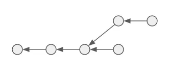

Git Internals
Part 1: Objects
Overview
- Motivation
- Objects
- 3 Types
- Two new git commands
- DEMO
Motivation
We found that understanding this information is fundamentally important to appreciating how useful and powerful Git is, others argue that it's confusing and unnecessarily complex for beginners. ... We leave it up to you to decide.
— 10.1 Git Internals - Plumbing and Porcelain
Motivating Questions
How does git really work?
How does git reconstruct a project with only a commit hash?
How do git repositories not take up a lot of disk space?
Objects
What is Git?
Two unconventional definitions:
- a content-addressable filesystem
- a simple key-value data store
What are the values and keys?
Values are objects.
Keys are hashes.
Objects are immutable.
git frequently provides information about objects!
Cloning
$ git clone git@github.com:gbroques/prop-types.git
Cloning into 'prop-types'...
remote: Enumerating objects: 6125, done.
remote: Counting objects: 100% (6125/6125), done.
remote: Compressing objects: 100% (3578/3578), done.
remote: Total 6125 (delta 2500), reused 5704 (delta 2238)
Receiving objects: 100% (6125/6125), 40.72 MiB | 592.00 KiB/s, done.
Resolving deltas: 100% (2500/2500), done.
Updating files: 100% (2951/2951), done.
Pushing
$ git push
Enumerating objects: 5, done.
Counting objects: 100% (5/5), done.
Delta compression using up to 4 threads
Compressing objects: 100% (3/3), done.
Writing objects: 100% (3/3), 1023 bytes | 511.00 KiB/s, done.
Total 3 (delta 2), reused 0 (delta 0), pack-reused 0
To git@github.com:gbroques/prop-types.git
8fd6b59..4e7ce21 master -> master
Pulling
$ git pull
remote: Enumerating objects: 112, done.
remote: Counting objects: 100% (101/101), done.
remote: Compressing objects: 100% (71/71), done.
remote: Total 71 (delta 52), reused 0 (delta 0)
Unpacking objects: 100% (71/71), 9.84 KiB | 13.00 KiB/s, done.
From git@github.com:gbroques/prop-types.git
f1c0c2a3..3f4264d6 release/1.0 -> origin/release/1.0
* [new branch] feature/adding-use-claims-map -> origin/feature/adding-use-claims-map
* [new branch] feature/cleaning-up-app -> origin/feature/cleaning-up-app
* [new branch] feature/typography-font-size -> origin/feature/typography-font-size
2f0c2b27..ef61c43d feature/updating-url-in-commands -> origin/feature/updating-url-in-commands
* [new branch] release/1.1 -> origin/release/1.1
Updating f1c0c2a3..3f4264d6
Fast-forward
package.json | 4 ++--
public/config.json | 10 +++++-----
public/index.html | 3 +++
public/pos-stores-index.html | 3 +++
public/stores-index.html | 3 +++
src/components/commands/commands.js | 17 ++++++++++++++---
src/config/commands.config.js | 6 ++++++
src/config/commands.environment.json | 11 +++++++++++
src/config/commandsOrigins.config.js | 4 ++++
9 files changed, 51 insertions(+), 10 deletions(-)
create mode 100644 src/config/commands.config.js
create mode 100644 src/config/commands.environment.json
create mode 100644 src/config/commandsOrigins.config.js
3 Object Types
 — file
— file- — directory
- — pointer to a tree
Object Hashing & Storage
Stored in the object database (.git/objects/)
Each object has a unique 40-char SHA-1 hash
.git/objects
├── 0f/
│ └── 6a4e6354e536514412ba38ab50ad6264a4d323 # 38 char filename
├── 2d/
│ ├── 0e74b07052fd2d44788bb3cced2923e56786bb
│ └── 2bd6b04c3e39b0c611ada8b0cbd12e64f46c11
├── dd/
│ └── f93dd01ed0c56b50f98ef7c4773a81a5a17a5b

Objects form a directed acyclic graph.
Two New Git Commands
git hash-objectgit cat-file
git hash-object
generate the hash of an object from its content
Hash-Object Example
$ echo "text" | git hash-object --stdin
8e27be7d6154a1f68ea9160ef0e18691d20560
git cat-file -p <hash>
pretty print an object
git cat-file -t <hash>
output the type of an object
- ?
- ?
- ?
Demo!
$ echo "one text" > 1.txt
$ git add .
$ git commit -m "Initial commit"
$ echo "a change" >> 1.txt
$ git add .
$ git commit -m "Second commit"
$ mkdir dir
$ echo "two text" > dir/2.txt
$ git add .
$ git commit -m "Third commit"
Current State
demo/
├── 1.txt # "one text\na change"
└── dir/
└── 2.txt # "two text"
If I made a fourth commit:
- adding a file —
3.txt - with the content "
one text"
then how many new objects would be created?
demo/
├── 1.txt # "one text\na change"
├── 3.txt # "one text"
└── dir/
└── 2.txt # "two text"
2
$ echo "one text" > 3.txt
$ git add .
$ git commit -m "Fourth commit"
Conclusion
Git is a content-addressable filesystem, and a simple key-value store, built on:
- Blobs — like files
- Trees — like directories
- Commits — pointers to trees (with meta-data)
and git relates these objects together in a graph structure on disk.
Additional Resources
Bonus Topics
Fourth Type of Git Object
lightweight versus annotated tags
Empty Commits
git commit --allow-empty -m "Empty commit"
Node.js implementation of git cat-file and git hash-object: